🗂️
多标签与多窗格
Ctrl+1..4 在单栏、左右分屏、上下分屏与四宫格之间切换；标签页可拖出成独立窗口，也能竖排在侧栏。每个文件夹记住自己的视图、排序与分组。
WINDOWS FILE MANAGER
原生渲染的 Windows 文件管理器 · 多标签多窗格 · 全盘秒搜 · 空格预览 · 飞传 · 保险箱
Ctrl+1..4 在单栏、左右分屏、上下分屏与四宫格之间切换；标签页可拖出成独立窗口，也能竖排在侧栏。每个文件夹记住自己的视图、排序与分组。
PulseIndex 服务维护全盘索引，边输边出结果；支持全拼与首字母，内容搜索覆盖代码、PDF 与 Office；Ctrl+Shift+F 高级搜索，Alt+Space 随时呼出。
按空格就能看：Markdown 排版、代码高亮、PDF 逐页、Office 与 EPUB 免装 Office、压缩包目录树、视频播放，PSD/AI/DWG 也有缩略图。悬停半秒弹出预览卡，空格展开。
复制或剪切的文件先进左下角暂存盘，跨文件夹收集后一次落地，也能发送到设备；两个文件可对照位置、时间、大小与内容，F7 在差异间跳转。
同一局域网内电脑与手机互传文件与文字，不走服务器、不耗流量；把文件拖到托盘飞传区即发，支持文件夹整体发送，也能与开源的 LocalSend 互收互发。
主密码解锁的保险箱，文件也能单独加密为 .wemi；密码由 Windows 保护、只存本机，不上传、不写日志。加密后原文件可选择删除。
可设为默认文件管理器，接管文件夹、Win+E 与「打开文件所在位置」，随时一键还原；合并资源管理器右键菜单，开机静默启动到托盘。
ffmpeg 解码、图片与 RAW、AI 与 MCP 等组件按需下载安装，官网源直连、网盘镜像兜底；启动后自动检查新版，签名与安装包校验通过才更新。
Windows 电脑端与 Android 手机端实拍 · v1.0.69
电脑端 · Windows
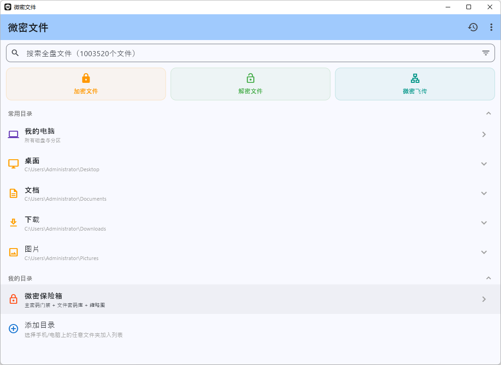
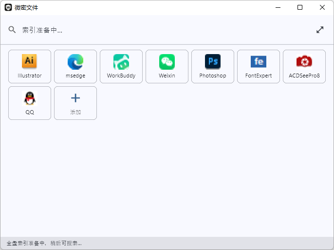
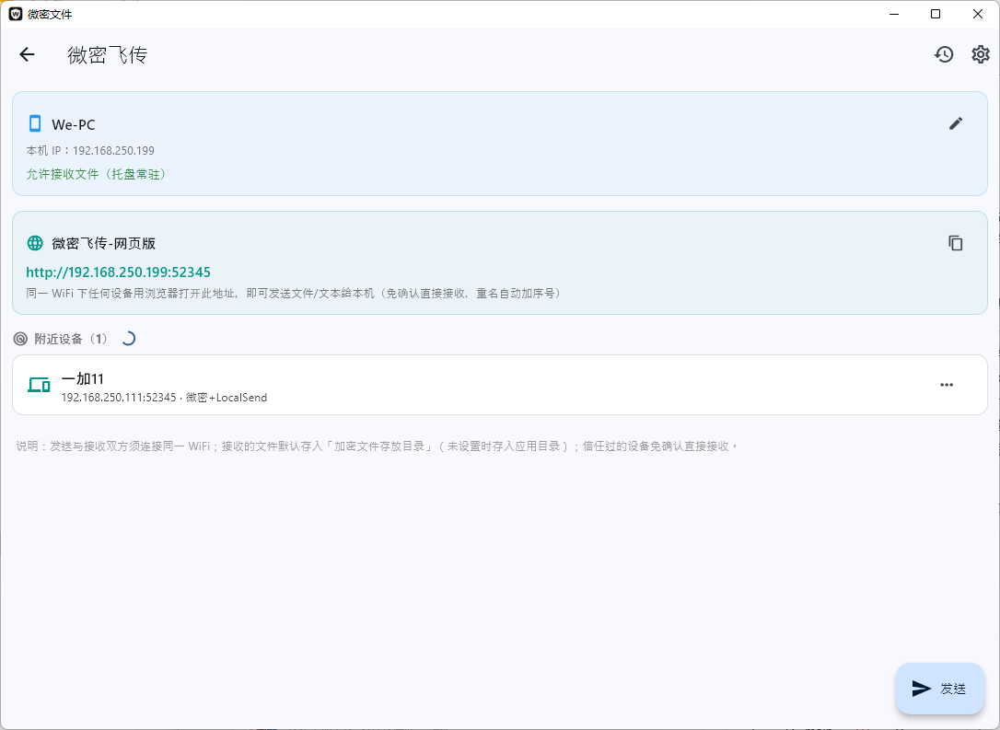
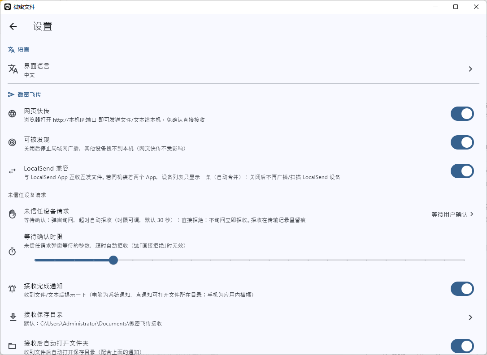
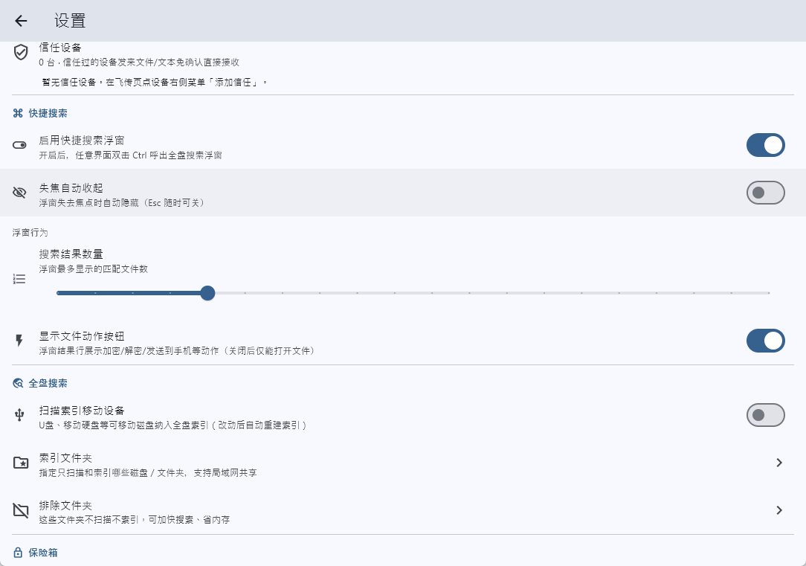
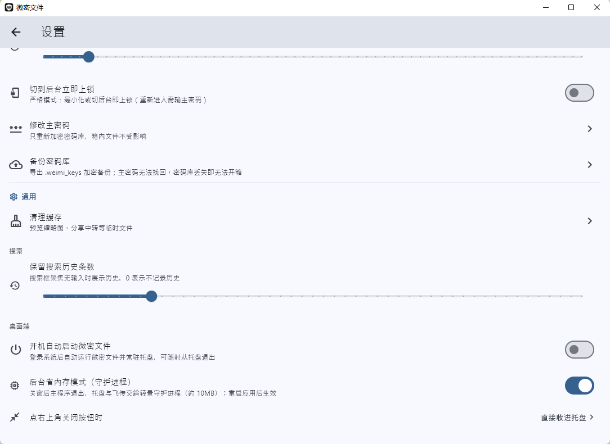
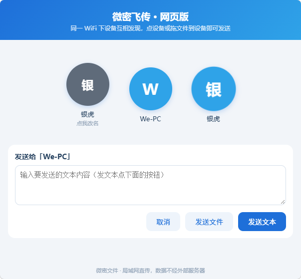
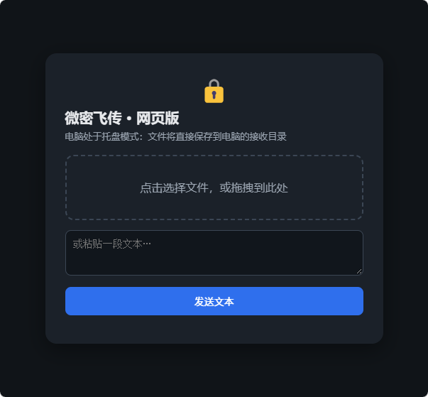
手机端 · Android
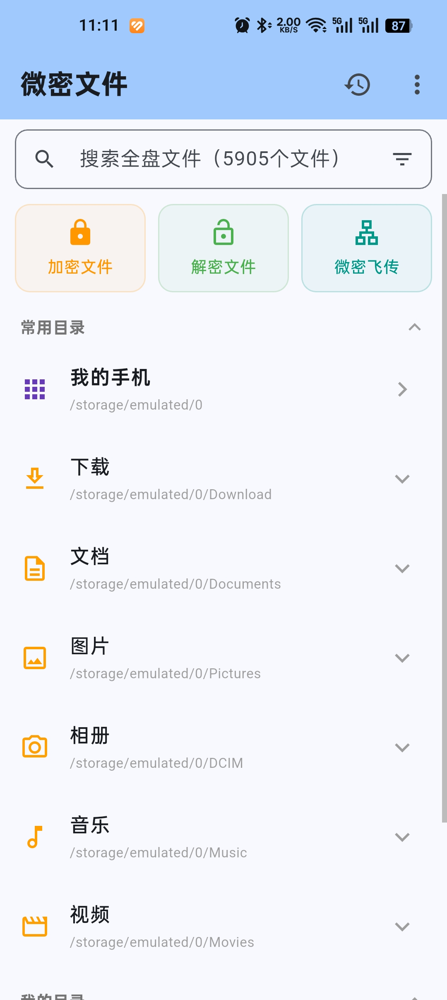
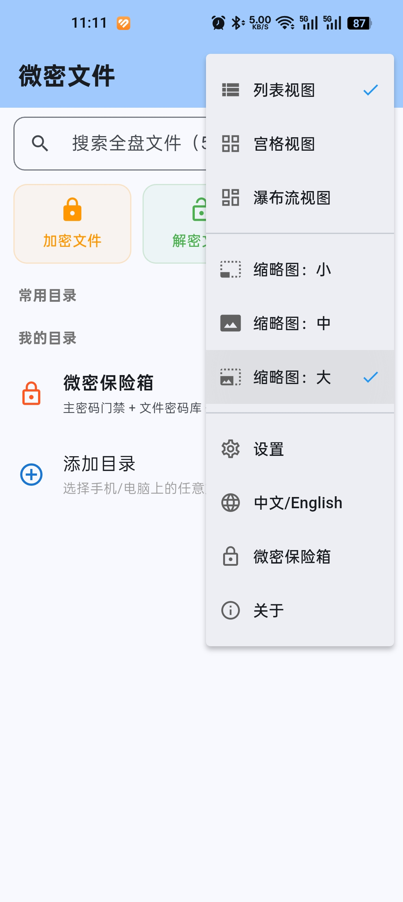
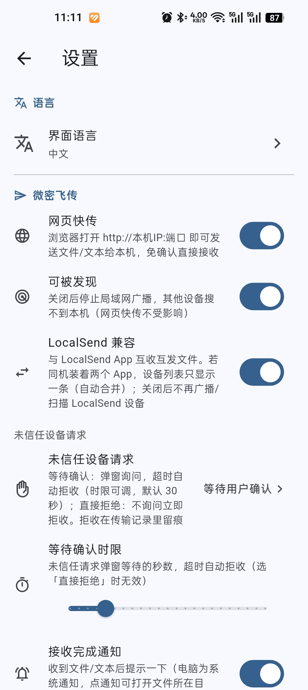
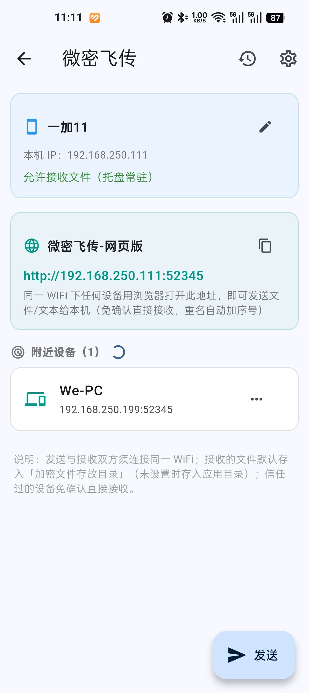
安装包按版本放在夸克网盘「微密文件管理器」目录，下载最新的 WeiMiSetup-1.0.14.exe 即可。
运行安装包，按向导完成安装；勾选 PulseIndex 索引服务即可搜索全盘文件与内容。
「设置 → 启动与集成」里把微密设为默认文件管理器，文件夹、Win+E 与「打开文件所在位置」都会交给它，随时可关闭还原。
选中文件按空格预览；Alt+Space 随时搜文件。要传手机就点标题栏飞传，同一 Wi-Fi 下直接发。
更细的说明见 使用手册。
同一款微密在 Android 与桌面端提供文件加密与保险箱：.wemi 格式、指纹解锁、内置查看器，并与电脑端飞传互通。